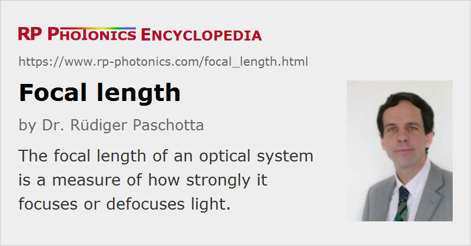

Focal Length
Definition: a measure of how strongly an optical system focuses or defocuses light
German: Brennweite
Formula symbol: f
Units: m
How to cite the article; suggest additional literature
Author: Dr. Rüdiger Paschotta
Various types of optical systems (e.g. microscope objectives and curved laser mirrors) can focus or defocus light, and the focal length is used for quantifying such effects. The simplest case is that of a thin focusing lens (Figure 1a). If a sufficiently large collimated beam of light is incident on the lens, the beam will be focused, and the focal length is the distance from the lens to that focus (assuming that the lens is surrounded by vacuum or air, not by some dense substance with a significant refractive index). For a defocusing lens (Figure 1b), the focal length is the distance from the lens to the virtual focus (indicated by the dashed lines), taken as a negative value. Some authors use different sign conventions, however, in particularly concerning the front and back focal length (see below).
Focal Length of a Thin or Thick Lens
An ideal thin lens with a given focal length f (taken as positive in case of a focusing lens) creates a radially varying phase delay for a laser beam according to the following equation:
This formula ignores the constant part of the optical phase change as well as optical aberrations.
The following equation allows one to calculate the dioptric power and thus the focal length of lens made of a material with refractive index n and with curvature radii R1 and R2 on the two surfaces:
The curvature radii are taken as positive values for convex surfaces and negative for concave surfaces. Positive results are obtained for focusing lenses, negative results for defocusing lenses. The last term is relevant only for thick lenses with substantial curvature on both sides. The formula delivers the focal length within the paraxial approximation, not considering spherical aberrations, for example.
The equation holds for paraxial rays, not too far from the symmetry axis.
Focal Length of a Curved Mirror
Curved mirrors are often used for focusing or defocusing light. For example, within laser resonators curved laser mirrors with dielectric coatings are more commonly used than lenses, mainly because they introduce lower losses.
A mirror with a curvature radius R of the surface has a focal length f = R / 2, if the beam axis is normal to the mirror surface. (We take positive signs for concave curvatures and focusing mirrors.) If there is some non-zero angle θ between the beam axis and the normal direction, the focal length is ftan = (R / 2) · cos θ in the tangential direction (i.e., within the plane of incidence) and fsag = (R / 2) / cos θ in the sagittal direction.
Curved laser mirrors usually have a curvature radius somewhere between 10 mm and 5 m. The fabrication of dielectric mirror coatings can be more difficult for very strongly curved mirror substrates, but with refined techniques it is possible to reach focal lengths of only a few millimeters, as required for some miniature lasers.
Focal Length of an Extended Optical System
For an optical system, which may consist of multiple lenses and other optical elements, the above definition of the focal length cannot be used, as it is not clear a priori for an extended system where to measure the distance to the focus: from the entrance into the optical system, from the exit, the middle, or some other position? In principle, an arbitrary definition of a reference point (e.g. the entrance or the middle) could be used, but that would in general mean that some common rules can not be applied, which e.g. hold for the radius of the beam waist at a focus behind some lens with a given focal length (see below), or the possible magnification of a telescope containing that optical system.
A common (but not universally used) approach for the definition of focal lengths of extended systems is based on geometrical optics. For finding the front focal point, one calculates rays which are horizontal on the back side (see Figure 2), using the paraxial approximation. The optical system is considered as a “black box”, where one does not care about the actual ray paths; instead, one works with internal rays which are extrapolated from the outer rays. Based on those extrapolated rays, one can define the front principal plane (or first principal plane). The front focal length is then the distance between the front focal point (in the front focal plane) and the front principal plane (see Figure 2). Some authors define the focal length to be negative in the situation of Figure 2, because the focal point is located before the front principal plane; others take the absolute value.

For a defocusing system, the front focal plane can be located on the output side; it contains a virtual focal point. Again, the focal length is the distance between principal plane and focal plane.
Similarly, one can define the back focal plane (or second focal plane) and back principal plane (or second principal plane), where horizontal rays occur on the left side, while on the right side one has converging rays for a focusing system and diverging rays for a defocusing system. If the refractive index is the same on the input and output side (e.g. ≈1 for air), the front focal length and back focal length are identical (apart from possible sign differences used by some authors) and can thus simply called the focal length. The two principal planes, however, generally do not coincide for thick lenses, and they can even lie outside a lens.
The explained definition delivers a focal length which can also be used in equations for the size of the focus (see below), for example.
Note that the locations of the left and right edges of the optical system (e.g. positions of outer lens surfaces, optical windows etc.) or its housing are not relevant for those definitions.
Different sign conventions for focal lengths are used in the literature. For example, one may have a negative front focal length if the front focal point lies before the front principal plane. Obviously, any equations involving focal lengths should be used with the assumed sign conventions.
See also the article on principal planes.
Focal Distances
In contrast to focal lengths, focal distances are related not to the principal planes but rather to the vertex points of lenses (not caring about a housing, which may be further extended). The front focal distance is thus the distance between front focal point and the entrance surface of the optics, while the back focal distance is the distance between the back surface and the back focal point.
Unfortunately, the terms are also used differently by other authors. For example, it happens that a focal distance is assumed to be the same as a focal length. Therefore, some product catalogs specify focal lengths, which should actually be called focal distances, and in addition the effective focal length.
The focal distance should also not be confused with the working distance, which is the distance between a specimen and the lens housing. Note that a specimen is not necessarily placed in the focal plane, e.g. when the input light to an objective is not collimated.
Effective Focal Length of a Photographic Objective
Considerable confusion arises from the fact that in the context of photo cameras the term effective focal length is also used with a completely different meaning, as explained in the following.
The angle of view of the camera is determined by the ratio of the image size on the film and the focal length. Film-based cameras have for a long time mostly used 35-mm film (also called 135 film according to ISO Standard 1007), where the image size on the film is typically 36 mm × 24 mm. (The width of the film spool is 35 mm, somewhat larger than 24 mm, as the picture does not extend to the edges of the spool.) A standard objective then has a focal length of 50 mm. However, modern digital cameras (particularly the more compact ones) often contain image sensors which are smaller than 36 mm × 24 mm, so that an objective lens with a correspondingly smaller focal length (e.g. 32 mm instead of 50 mm) is required for obtaining the same field of view. As many photographers are still used to the previously valid relation between focal length and angle of view, it has become common to specify the effective focal length of an objective of a digital camera as that focal length which would give the same angle of view in combination with ordinary 35-mm film. For example, an objective with a true focal length of 32 mm may then be said to have an effective focal length of 50 mm and thus function as a standard objective, rather than e.g. a macro or tele objective.
It can be expected that this type of conversion will be abandoned as 35-mm film becomes less and less common.
Optical Systems with an Adjustable Focal Length
For some applications, in particular for focusing of imaging systems, it is essential than the focal length of an optical system can be fine adjusted. The following physical principles can be used:
- If a lens is made of deformable material, applying some mechanical pressure can alter its shape, and this can change the focal length. This principle is used in the eye's lens. The focal length is somewhat reduced for focusing on nearby objects.
- When an optical system contains multiple optical elements (e.g. lenses), the focal length may be tuned by adjusting the relative distances between the optical elements. This principle is used e.g. in photographic zoom objectives.
Wavelength Dependence of the Focal Length; Using Curved Mirrors
Ordinary lenses, working on the basis of refraction, have a focal length which is slightly wavelength-dependent due to the wavelength dependence of the refractive index (–> chromatic dispersion). This effect leads to chromatic aberrations of imaging systems and similar problems in other applications where an optical system is used for a wide range of optical wavelengths. Lens combinations (e.g., objectives for photographic cameras) can be designed such that chromatic aberrations are minimized. Most common is the use of achromatic doublets, i.e., lenses consisting of two different glass materials chosen such that the overall chromatic aberrations are largely canceled.
One may eliminate chromatic aberrations altogether by using optical systems with mirrors only. A curved mirror with radius of curvature R has a focal length f = R / 2 (for normal incidence), determined only by the geometry and thus independent of the wavelength. On the other hand, for non-normal incidence the focal length in the tangential direction is decreased by the cosine of the angle of incidence, and increased by the inverse cosine of that angle in the sagittal direction. Therefore, such mirrors can introduce astigmatism.
Dioptric Power
The dioptric power (also called focusing power) of a lens is defined as the inverse of the effective focal length (which is the same is the front and back focal length if the median on both sides of the optics is the same). This means that a strongly focusing lens has a small focal length, but a large dioptric power. For prescription glasses, it is common the specify the dioptric power, whereas the focal length is specified for standard lenses, microscope objectives, and photographic objectives.
Focusing of Divergent Beams

If a divergent (rather than collimated) beam hits a focusing lens, the distance b from the lens to the focus becomes larger than f (Figure 2). The lens equation states that
where a is the distance from the original focus to the lens. This shows that b ≈ f if a >> f, but b > f otherwise. That relation can be intuitively understood: a focusing power 1 / a would be required to collimate the incident beam (i.e. to remove its beam divergence), so that only a focusing power 1 / f − 1 / a is left for focusing.
If a ≤ f, the equation cannot be fulfilled: the lens can then not focus the beam.
Note that the lens equation applies for rays, assuming that the paraxial approximation is valid, i.e., all angles relative to the beam axis remain small.
Achievable Beam Waist Radius
If a collimated Gaussian beam with beam radius w0 hits a focusing lens with focal length f, the beam radius of the beam waist (focus) after the lens can be calculated with the equation
where it is assumed that the beam radius at the focus is much smaller than the initial beam radius w0. (This condition is violated for beams with a too small incident radius; the focus is then larger than according to the given equation.) Also, it is assumed that the beam radius is significantly larger than the wavelength λ, so that the paraxial approximation is valid.
The equation shows that what determines the minimum possible beam radius is not the focal length f alone, but rather the ratio of f to the radius of the open aperture of the lens, which sets a maximum to the input beam radius w0. For a focusing or collimation lens, that ratio is essentially the numerical aperture of the lens.
Whether this rule can also be applied to an extended optical system with focal length f depends on the applied definition of f. It is useful to specify an effective focal length which is valid for such relations.
Questions and Comments from Users
Here you can submit questions and comments. As far as they get accepted by the author, they will appear above this paragraph together with the author’s answer. The author will decide on acceptance based on certain criteria. Essentially, the issue must be of sufficiently broad interest.
Please do not enter personal data here; we would otherwise delete it soon. (See also our privacy declaration.) If you wish to receive personal feedback or consultancy from the author, please contact him e.g. via e-mail.
By submitting the information, you give your consent to the potential publication of your inputs on our website according to our rules. (If you later retract your consent, we will delete those inputs.) As your inputs are first reviewed by the author, they may be published with some delay.
See also: focal distance, numerical aperture, optical apertures, principal points and principal planes, beam divergence, chromatic aberrations, optical aberrations, f-number, achromatic optics, ABCD matrix, lenses, mirrors
and other articles in the category general optics
|  |
If you like this page, please share the link with your friends and colleagues, e.g. via social media:
These sharing buttons are implemented in a privacy-friendly way!